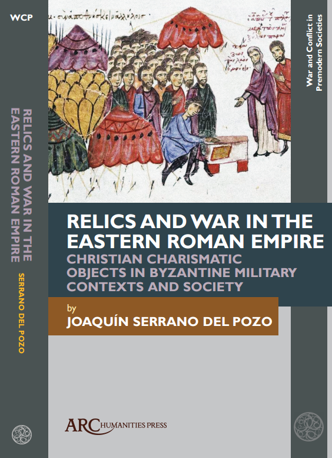

About
I am a historian specialising in Late Antique and Eastern Roman (“Byzantine”) culture. My research interests include the study of medieval war from a sociocultural perspective, the veneration of Christian relics, and the interplay between literary, material, and iconographic sources.
Originally from Chile, I completed a BA and an MSt in History at the Pontifical Catholic University of Valparaíso (PUCV), before moving to Scotland for a PhD at the Centre of Late Antique, Islamic and Byzantine Studies (CLAIBS) at the University of Edinburgh.
My doctoral thesis at Edinburgh examined the use of Christian relics in Late Roman and Byzantine war. My current postdoctoral research expands on this topic by exploring the political and military use of Christian relics by rulers of various kingdoms and polities across the Euro-Mediterranean medieval world, AD 600–1200.
Academic Career
- April 2026–Present Walter Benjamin Postdoctoral Researcher, Johannes Gutenberg University Mainz
- 2025–April 2026 Walter Benjamin Postdoctoral Researcher, University of Tübingen
- 2024–2025 Teach@Tübingen Postdoctoral Fellow, University of Tübingen
- 2019–2024 PhD in History, University of Edinburgh
- 2015–2017 MSt in History of Art and Culture, Pontifical Catholic University of Valparaíso
- 2009–2014 BA in History and BA in Education, Pontifical Catholic University of Valparaíso
Research Interests
- Social and cultural history of Late Antiquity and Byzantium, 4th–13th centuries
- The veneration of Christian relics
- War and society in the Middle Ages
- The Roman-Persian wars and the reign of Heraclius
My work examines sacred objects not only as devotional artefacts, but also as objects embedded in ritual, military culture, political authority, and historical memory.
Publications

Relics and War in the Eastern Roman Empire
Relics and War in the Eastern Roman Empire: Christian Charismatic Objects in Byzantine Military Contexts and Society.
Arc Humanities Press, forthcoming 2026.
Papers
- “The labarum of Constantine as a Charismatic Object.” Interdisciplinary Journal for Religion and Transformation in Contemporary Society, Brill, published online ahead of print, 2025. DOI
- “Relics, images and Christian devices in the Roman-Persian wars (4th–7th centuries).” Pre-Modern ‘Pop Cultures’? Images and Objects around the Mediterranean (c. 350–1918), Eikón Imago, 2022. Link
- “The Constantinian Labarum and the Christianization of Roman Military Standards.” Journal for Late Antique Religion and Culture 15, 2021, pp. 37–64. DOI
- “The Cross-standard of Emperor Maurice (582–602 AD).” Diogenes 11, 2021, pp. 1–17. Link
- “El combate singular de Heraclio: ¿leyenda o historia?” Historia 396 10.1, 2020, pp. 285–318. Link
- “El emperador Heraclio (610–641) entre la Historia y la leyenda: un estado de la cuestión.” Intus-Legere Historia 12.1, 2018. Link
- “¿El emperador Heraclio como nuevo David? La iconografía de los Platos bizantinos de Chipre frente a las fuentes escritas.” Byzantion Nea Hellás 36, 2017, pp. 282–305. Link
- “La Pérdida de España: el tópico de la lamentación y el sentido providencial en la Crónica Mozárabe del 754.” Intus-Legere Historia 8.1, 2014. Link
Book Chapters
- “The Theotokos and Saint Theodore at war: Supernatural aid on the Bulgarian campaign of emperor John I Tzimiskes and the Battle of Dorostolon (AD 971).” In Supernatural Aid in Medieval Warfare: Saints at War in Southeastern Europe, ed. Boris Stojkovski, forthcoming.
Reviews
- Las vidas de Constantino-Cirilio y Metodio de Tesalónica. Revista de Historiografía 39, pp. 629–632. Link
- Review of Gonzalo Espejo Jáimez, ed., Jorge de Pisidia. Panegíricos. Journal for Late Antique Religion and Culture. Link
- Review of Mike Humphreys, ed., A Companion to Byzantine Iconoclasm. Byzantion Nea Hellás 41, 2022, pp. 323–326. Link
Contact and Profiles
Byzantinistik, Johannes Gutenberg University Mainz.
Email: jserrano@uni-mainz.de